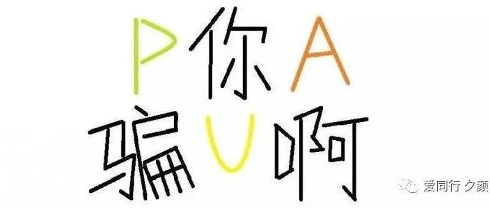

你有被PUA吗？

和朋友聊天，他说怀疑自己是PUA了。我经常发现朋友被PUA，也包括我的直女同学。所以我们聊聊这个话题。
什么是PUA？
此处不看百度，自己总结：
PUA，是指通过贬低对方，使对方产生“自己很糟糕”、心怀内疚的感觉，来达到对对方精神控制的目的。比如：你啥都做不好，就你这熊样，除了我还有谁会要你？

举例：
创造101出来的火箭少女队长Yamy，在微博爆出一段老板徐明朝的开会录音。

录音里，这老板发动外貌羞辱+人格侮辱双重攻击。
他说Yamy长得丑不自知、不时尚、娘炮……还强迫其他员工现场赞同。
这就是职场PUA的典型例子。
什么人容易被PUA？
讨好型人格；
不懂得拒绝；
自尊自信差。
如何应对PUA？
识别PUA。当对方贬低你、利用你的内疚要求你做什么什么的时候，不要急于去认同和回应，意识到自己可能被PUA了。
停下来，呼吸，帮助自己平静下来。
体会自己的感受和需要。
学会拒绝，并寻求朋友的帮助。
关注爱同行，学会更爱自己